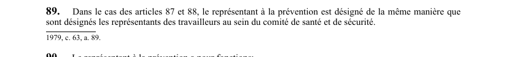

art-89-LSST : mode de désignation du représentant
Un article du wiki ⚖️ Recueil législatif
🌐 LegisQuébec · 📄 PDF officiel (page 28)
Texte officiel : capture du PDF

🔗 Ouvrir a cette page : LSST.pdf : page 28 · texte a jour au 26 mars 2024
En bref
Dans le cas des articles 87 et 88, le représentant à la prévention est désigné de la même manière que sont désignés les représentants des travailleurs. Il s'agit d'une obligation.
- Selon les articles 87 et 88.
Voir aussi
- art. 87 : désignation représentant prévention · lorsqu'il existe un comité de santé et de sécurité, une ou des personnes sont désignées parmi les travailleurs pour exercer les fonctions de représentant à la prévention ; ces personnes sont membres d'office du comité.
- art. 88 : représentant sans comité constitué · faculté : dans un établissement d'une catégorie pouvant former un comité, un représentant à la prévention peut être désigné sur avis écrit de l'association accréditée ou d'au moins 10 % des travailleurs, avec copie à la Commission.
- art. 90 : fonctions représentant prévention · le représentant à la prévention inspecte les lieux de travail, enquête sur les accidents, identifie les dangers, fait des recommandations, assiste les travailleurs dans leurs droits, accompagne l'inspecteur et intervient lors des refus de travail.
- art. 91 : formation représentant prévention · faculté : le représentant à la prévention peut s'absenter sans perte de salaire pour participer à des programmes de formation approuvés par la Commission, qui assume les frais d'inscription, de déplacement et de séjour.
- 🔧 Modifié par : LMRSST · Article modificateur de la LMRSST.
- ↑ Loi : LSST
Pages qui pointent ici (5)
- art-162-LMRSST, mod. art. 89 LSST Recueil législatif
- art-87-LSST, désignation représentant Recueil législatif
- art-88-LSST, comité SST Recueil législatif
- art-90-LSST, représentant prévention Recueil législatif
- art-91-LSST, représentant prévention Recueil législatif